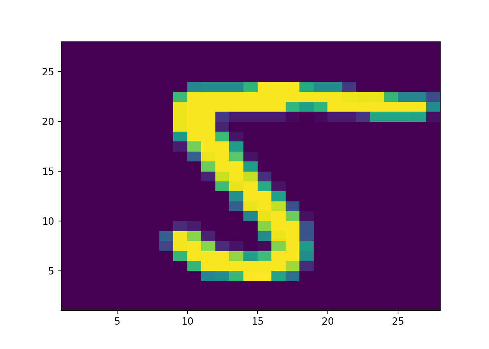
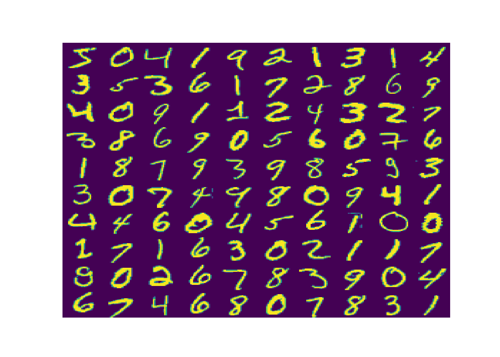

使用 MNIST 手寫數字的資料集，紀錄數字\(0\sim 10\)，共有\(10\)個類別。 包括共有\(60,000\)筆訓練資料，與\(10,000\)筆測試資料。
程式碼的命名方式如下，x 指的是圖片，y 指的是圖片對應的數字， _train 是指訓練資料，_test 是指測試資料。
# 匯入資料
(x_train, y_train), (x_test, y_test) = mnist.load_data()
x_train.shape
#> (60000, 28, 28)
y_train.shape
#> (60000,)
x_test.shape
#> (10000, 28, 28)
y_test.shape
#> (10000,)
img_rows, img_cols = 28, 28 # 每張圖片的資料維度
num_classes = 10 # 圖片類別數原始資料是屬於三維陣列，分別為圖片張數、行數與列數。將圖片轉成。 圖片的數字是以\(0\sim 255\)表示手寫筆劃顏色的深淺， 所以將圖片的資訊做轉換，變成以\(0\sim 1\)表示。
# 資料轉換
if K.image_data_format() == 'channels_first':
x_train = x_train.reshape(x_train.shape[0], 1, img_rows, img_cols)
x_test = x_test.reshape(x_test.shape[0], 1, img_rows, img_cols)
input_shape = (1, img_rows, img_cols)
else:
x_train = x_train.reshape(x_train.shape[0], img_rows, img_cols, 1)
x_test = x_test.reshape(x_test.shape[0], img_rows, img_cols, 1)
input_shape = (img_rows, img_cols, 1)
x_train.shape
#> (60000, 28, 28, 1)
y_train.shape
#> (60000,)
x_test.shape
#> (10000, 28, 28, 1)
y_test.shape
#> (10000,)
x_train = x_train.astype('float32')
x_test = x_test.astype('float32')
x_train /= 255
x_test /= 255用 pcolormesh() 畫出第一個數字的圖片，函數會以 Z 座標的值決定顏色。
x1 = np.array(range(1,29))
y1 =x1
X,Y=np.meshgrid(x1, y1)
Z=x_test[[1]].reshape([28,28])
plt.cla()
plt.pcolormesh(X,Y,Z)
plt.show()
透過 subplots() 進行多張圖片的合併。展示前 \(100\) 筆資料的數字圖片。
## 訓練資料
plot_dim=10
num1 = np.array(range(0,plot_dim))
num2 = np.array(range(0,plot_dim))
x1 = np.array(range(1,29))
y1 =x1
X,Y=np.meshgrid(x1, y1)
fig, axs = plt.subplots(plot_dim,plot_dim,
gridspec_kw={'wspace': 0, 'hspace': 0})
k=0
for i in num1:
for j in num2:
Z=x_train[[k]].reshape([28,28])
axs[i,j].pcolormesh(X,Y,Z)
axs[i,j].invert_yaxis()
axs[i,j].axis('off')
k+=1
#> <matplotlib.collections.QuadMesh object at 0x0000013D12ABEA90>
#> (1.0, 28.0, 28.0, 1.0)
#> <matplotlib.collections.QuadMesh object at 0x0000013D12ABECF8>
#> (1.0, 28.0, 28.0, 1.0)
#> <matplotlib.collections.QuadMesh object at 0x0000013D12AD2048>
#> (1.0, 28.0, 28.0, 1.0)
#> <matplotlib.collections.QuadMesh object at 0x0000013D12AD22B0>
#> (1.0, 28.0, 28.0, 1.0)
#> <matplotlib.collections.QuadMesh object at 0x0000013D12AD2550>
#> (1.0, 28.0, 28.0, 1.0)
#> <matplotlib.collections.QuadMesh object at 0x0000013D12AD27F0>
#> (1.0, 28.0, 28.0, 1.0)
#> <matplotlib.collections.QuadMesh object at 0x0000013D12AD2A90>
#> (1.0, 28.0, 28.0, 1.0)
#> <matplotlib.collections.QuadMesh object at 0x0000013D12AD2D30>
#> (1.0, 28.0, 28.0, 1.0)
#> <matplotlib.collections.QuadMesh object at 0x0000013D13000048>
#> (1.0, 28.0, 28.0, 1.0)
#> <matplotlib.collections.QuadMesh object at 0x0000013D130002B0>
#> (1.0, 28.0, 28.0, 1.0)
#> <matplotlib.collections.QuadMesh object at 0x0000013D13000550>
#> (1.0, 28.0, 28.0, 1.0)
#> <matplotlib.collections.QuadMesh object at 0x0000013D130007F0>
#> (1.0, 28.0, 28.0, 1.0)
#> <matplotlib.collections.QuadMesh object at 0x0000013D13000A90>
#> (1.0, 28.0, 28.0, 1.0)
#> <matplotlib.collections.QuadMesh object at 0x0000013D13000D30>
#> (1.0, 28.0, 28.0, 1.0)
#> <matplotlib.collections.QuadMesh object at 0x0000013D13013048>
#> (1.0, 28.0, 28.0, 1.0)
#> <matplotlib.collections.QuadMesh object at 0x0000013D130132B0>
#> (1.0, 28.0, 28.0, 1.0)
#> <matplotlib.collections.QuadMesh object at 0x0000013D13013550>
#> (1.0, 28.0, 28.0, 1.0)
#> <matplotlib.collections.QuadMesh object at 0x0000013D130137F0>
#> (1.0, 28.0, 28.0, 1.0)
#> <matplotlib.collections.QuadMesh object at 0x0000013D13013A90>
#> (1.0, 28.0, 28.0, 1.0)
#> <matplotlib.collections.QuadMesh object at 0x0000013D13013D30>
#> (1.0, 28.0, 28.0, 1.0)
#> <matplotlib.collections.QuadMesh object at 0x0000013D13022048>
#> (1.0, 28.0, 28.0, 1.0)
#> <matplotlib.collections.QuadMesh object at 0x0000013D130222B0>
#> (1.0, 28.0, 28.0, 1.0)
#> <matplotlib.collections.QuadMesh object at 0x0000013D13022550>
#> (1.0, 28.0, 28.0, 1.0)
#> <matplotlib.collections.QuadMesh object at 0x0000013D130227F0>
#> (1.0, 28.0, 28.0, 1.0)
#> <matplotlib.collections.QuadMesh object at 0x0000013D13022A90>
#> (1.0, 28.0, 28.0, 1.0)
#> <matplotlib.collections.QuadMesh object at 0x0000013D13022D30>
#> (1.0, 28.0, 28.0, 1.0)
#> <matplotlib.collections.QuadMesh object at 0x0000013D13032048>
#> (1.0, 28.0, 28.0, 1.0)
#> <matplotlib.collections.QuadMesh object at 0x0000013D130322B0>
#> (1.0, 28.0, 28.0, 1.0)
#> <matplotlib.collections.QuadMesh object at 0x0000013D13032550>
#> (1.0, 28.0, 28.0, 1.0)
#> <matplotlib.collections.QuadMesh object at 0x0000013D130327F0>
#> (1.0, 28.0, 28.0, 1.0)
#> <matplotlib.collections.QuadMesh object at 0x0000013D13032A90>
#> (1.0, 28.0, 28.0, 1.0)
#> <matplotlib.collections.QuadMesh object at 0x0000013D13032D30>
#> (1.0, 28.0, 28.0, 1.0)
#> <matplotlib.collections.QuadMesh object at 0x0000013D13042048>
#> (1.0, 28.0, 28.0, 1.0)
#> <matplotlib.collections.QuadMesh object at 0x0000013D130422B0>
#> (1.0, 28.0, 28.0, 1.0)
#> <matplotlib.collections.QuadMesh object at 0x0000013D13042550>
#> (1.0, 28.0, 28.0, 1.0)
#> <matplotlib.collections.QuadMesh object at 0x0000013D130427F0>
#> (1.0, 28.0, 28.0, 1.0)
#> <matplotlib.collections.QuadMesh object at 0x0000013D13042A90>
#> (1.0, 28.0, 28.0, 1.0)
#> <matplotlib.collections.QuadMesh object at 0x0000013D13042D30>
#> (1.0, 28.0, 28.0, 1.0)
#> <matplotlib.collections.QuadMesh object at 0x0000013D13052048>
#> (1.0, 28.0, 28.0, 1.0)
#> <matplotlib.collections.QuadMesh object at 0x0000013D130522B0>
#> (1.0, 28.0, 28.0, 1.0)
#> <matplotlib.collections.QuadMesh object at 0x0000013D13052550>
#> (1.0, 28.0, 28.0, 1.0)
#> <matplotlib.collections.QuadMesh object at 0x0000013D130527F0>
#> (1.0, 28.0, 28.0, 1.0)
#> <matplotlib.collections.QuadMesh object at 0x0000013D13052A90>
#> (1.0, 28.0, 28.0, 1.0)
#> <matplotlib.collections.QuadMesh object at 0x0000013D13052D30>
#> (1.0, 28.0, 28.0, 1.0)
#> <matplotlib.collections.QuadMesh object at 0x0000013D13065048>
#> (1.0, 28.0, 28.0, 1.0)
#> <matplotlib.collections.QuadMesh object at 0x0000013D130652B0>
#> (1.0, 28.0, 28.0, 1.0)
#> <matplotlib.collections.QuadMesh object at 0x0000013D13065550>
#> (1.0, 28.0, 28.0, 1.0)
#> <matplotlib.collections.QuadMesh object at 0x0000013D130657F0>
#> (1.0, 28.0, 28.0, 1.0)
#> <matplotlib.collections.QuadMesh object at 0x0000013D13065A90>
#> (1.0, 28.0, 28.0, 1.0)
#> <matplotlib.collections.QuadMesh object at 0x0000013D13065D30>
#> (1.0, 28.0, 28.0, 1.0)
#> <matplotlib.collections.QuadMesh object at 0x0000013D13074048>
#> (1.0, 28.0, 28.0, 1.0)
#> <matplotlib.collections.QuadMesh object at 0x0000013D130742B0>
#> (1.0, 28.0, 28.0, 1.0)
#> <matplotlib.collections.QuadMesh object at 0x0000013D13074550>
#> (1.0, 28.0, 28.0, 1.0)
#> <matplotlib.collections.QuadMesh object at 0x0000013D130747F0>
#> (1.0, 28.0, 28.0, 1.0)
#> <matplotlib.collections.QuadMesh object at 0x0000013D13074A90>
#> (1.0, 28.0, 28.0, 1.0)
#> <matplotlib.collections.QuadMesh object at 0x0000013D13074D30>
#> (1.0, 28.0, 28.0, 1.0)
#> <matplotlib.collections.QuadMesh object at 0x0000013D13085048>
#> (1.0, 28.0, 28.0, 1.0)
#> <matplotlib.collections.QuadMesh object at 0x0000013D130852B0>
#> (1.0, 28.0, 28.0, 1.0)
#> <matplotlib.collections.QuadMesh object at 0x0000013D13085550>
#> (1.0, 28.0, 28.0, 1.0)
#> <matplotlib.collections.QuadMesh object at 0x0000013D130857F0>
#> (1.0, 28.0, 28.0, 1.0)
#> <matplotlib.collections.QuadMesh object at 0x0000013D13085A90>
#> (1.0, 28.0, 28.0, 1.0)
#> <matplotlib.collections.QuadMesh object at 0x0000013D13085D30>
#> (1.0, 28.0, 28.0, 1.0)
#> <matplotlib.collections.QuadMesh object at 0x0000013D13094048>
#> (1.0, 28.0, 28.0, 1.0)
#> <matplotlib.collections.QuadMesh object at 0x0000013D130942B0>
#> (1.0, 28.0, 28.0, 1.0)
#> <matplotlib.collections.QuadMesh object at 0x0000013D13094550>
#> (1.0, 28.0, 28.0, 1.0)
#> <matplotlib.collections.QuadMesh object at 0x0000013D130947F0>
#> (1.0, 28.0, 28.0, 1.0)
#> <matplotlib.collections.QuadMesh object at 0x0000013D13094A90>
#> (1.0, 28.0, 28.0, 1.0)
#> <matplotlib.collections.QuadMesh object at 0x0000013D13094D30>
#> (1.0, 28.0, 28.0, 1.0)
#> <matplotlib.collections.QuadMesh object at 0x0000013D130A6048>
#> (1.0, 28.0, 28.0, 1.0)
#> <matplotlib.collections.QuadMesh object at 0x0000013D130A62B0>
#> (1.0, 28.0, 28.0, 1.0)
#> <matplotlib.collections.QuadMesh object at 0x0000013D130A6550>
#> (1.0, 28.0, 28.0, 1.0)
#> <matplotlib.collections.QuadMesh object at 0x0000013D130A67F0>
#> (1.0, 28.0, 28.0, 1.0)
#> <matplotlib.collections.QuadMesh object at 0x0000013D130A6A90>
#> (1.0, 28.0, 28.0, 1.0)
#> <matplotlib.collections.QuadMesh object at 0x0000013D130A6D30>
#> (1.0, 28.0, 28.0, 1.0)
#> <matplotlib.collections.QuadMesh object at 0x0000013D130B5048>
#> (1.0, 28.0, 28.0, 1.0)
#> <matplotlib.collections.QuadMesh object at 0x0000013D130B52B0>
#> (1.0, 28.0, 28.0, 1.0)
#> <matplotlib.collections.QuadMesh object at 0x0000013D130B5550>
#> (1.0, 28.0, 28.0, 1.0)
#> <matplotlib.collections.QuadMesh object at 0x0000013D130B57F0>
#> (1.0, 28.0, 28.0, 1.0)
#> <matplotlib.collections.QuadMesh object at 0x0000013D130B5A90>
#> (1.0, 28.0, 28.0, 1.0)
#> <matplotlib.collections.QuadMesh object at 0x0000013D130B5D30>
#> (1.0, 28.0, 28.0, 1.0)
#> <matplotlib.collections.QuadMesh object at 0x0000013D130C5048>
#> (1.0, 28.0, 28.0, 1.0)
#> <matplotlib.collections.QuadMesh object at 0x0000013D130C52B0>
#> (1.0, 28.0, 28.0, 1.0)
#> <matplotlib.collections.QuadMesh object at 0x0000013D130C5550>
#> (1.0, 28.0, 28.0, 1.0)
#> <matplotlib.collections.QuadMesh object at 0x0000013D130C57F0>
#> (1.0, 28.0, 28.0, 1.0)
#> <matplotlib.collections.QuadMesh object at 0x0000013D130C5A90>
#> (1.0, 28.0, 28.0, 1.0)
#> <matplotlib.collections.QuadMesh object at 0x0000013D130C5D30>
#> (1.0, 28.0, 28.0, 1.0)
#> <matplotlib.collections.QuadMesh object at 0x0000013D130D7048>
#> (1.0, 28.0, 28.0, 1.0)
#> <matplotlib.collections.QuadMesh object at 0x0000013D130D72B0>
#> (1.0, 28.0, 28.0, 1.0)
#> <matplotlib.collections.QuadMesh object at 0x0000013D130D7550>
#> (1.0, 28.0, 28.0, 1.0)
#> <matplotlib.collections.QuadMesh object at 0x0000013D130D77F0>
#> (1.0, 28.0, 28.0, 1.0)
#> <matplotlib.collections.QuadMesh object at 0x0000013D130D7A90>
#> (1.0, 28.0, 28.0, 1.0)
#> <matplotlib.collections.QuadMesh object at 0x0000013D130D7D30>
#> (1.0, 28.0, 28.0, 1.0)
#> <matplotlib.collections.QuadMesh object at 0x0000013D130E7048>
#> (1.0, 28.0, 28.0, 1.0)
#> <matplotlib.collections.QuadMesh object at 0x0000013D130E72B0>
#> (1.0, 28.0, 28.0, 1.0)
#> <matplotlib.collections.QuadMesh object at 0x0000013D130E7550>
#> (1.0, 28.0, 28.0, 1.0)
#> <matplotlib.collections.QuadMesh object at 0x0000013D130E77F0>
#> (1.0, 28.0, 28.0, 1.0)
#> <matplotlib.collections.QuadMesh object at 0x0000013D130E7A90>
#> (1.0, 28.0, 28.0, 1.0)
#> <matplotlib.collections.QuadMesh object at 0x0000013D130E7D30>
#> (1.0, 28.0, 28.0, 1.0)
#> <matplotlib.collections.QuadMesh object at 0x0000013D130F8048>
#> (1.0, 28.0, 28.0, 1.0)
#> <matplotlib.collections.QuadMesh object at 0x0000013D130F82B0>
#> (1.0, 28.0, 28.0, 1.0)
plt.show()